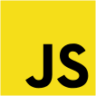
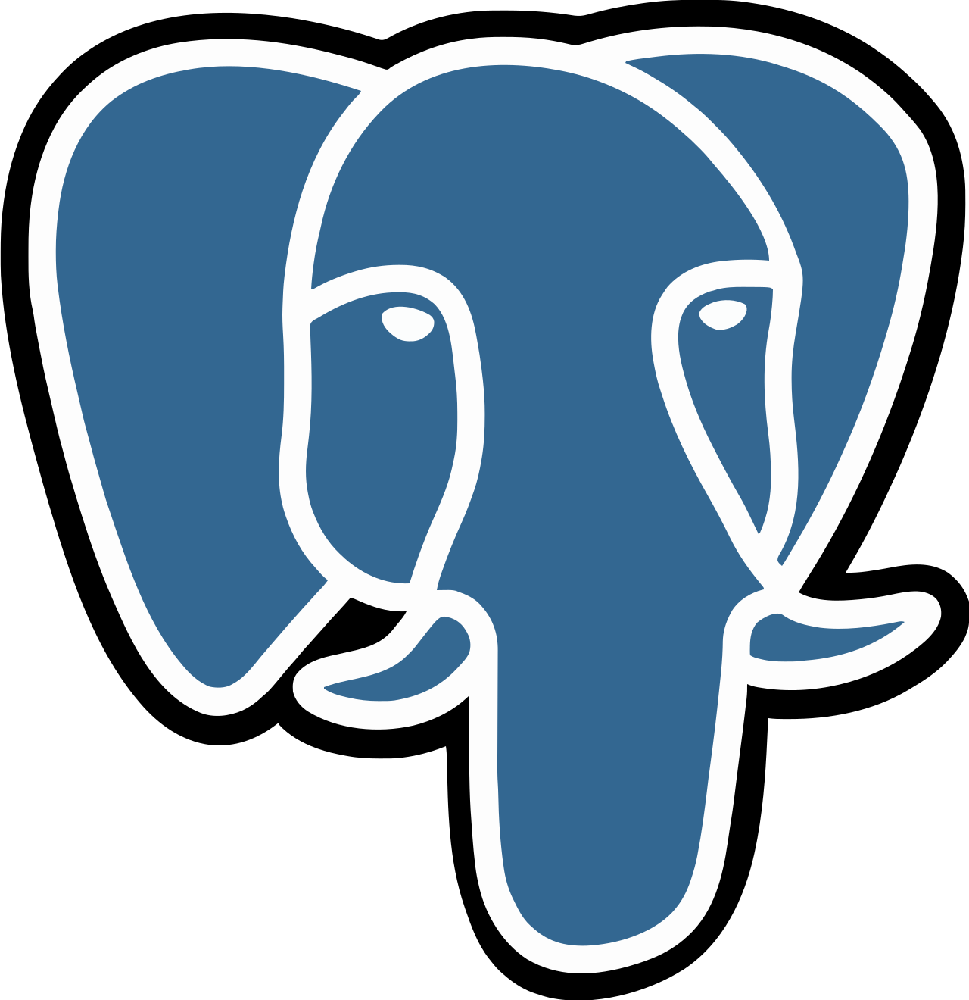

Benjamin Klingberg
Software Developer
My Work
Technologies I Know


About Me
Hi! I’m Benjamin, a solution-oriented fullstack developer driven by bridging the gap between robust backend architecture and intuitive, accessible user experiences. With a background spanning UX design, digital accessibility (WCAG), SEO, and B2B sales, I don’t just write code. Instead, I focus on building scalable, user-centric systems that deliver genuine business value.
I take projects from initial concept to finished product, giving equal weight to how an application performs under the hood and how it feels to the end user. Currently, I am deepening my modern fullstack capabilities (TypeScript, React, Next.js, Node.js, and PostgreSQL) at Chas Academy, building on my specialized foundation in UX and digital accessibility from Medieinstitutet. This enables me to deliver both WCAG-compliant, polished interfaces and logical, well-optimized APIs.
A tangible reflection of my technical drive and rapid-prototyping mindset is my competitive track record across major hackathons in 2026:
- 2nd Place: 2Hero X Ahlsell Hackathon, created a tool making it easier for Ahlsell specialists to filter out materials from large blueprints.
- Winner "BEST FRONTEND": Chas Challenge 2026
- 2nd Place: 2Hero X Cline AI Hackathon, our team partnered with Saab to develop an AI governance tool preventing unsafe code generation.
- Finalist: 2Hero X GitLab AI Hackathon
- Finalist: 2Hero X Kolomolo AI Hackathon
In short: I am a curious, disciplined developer dedicated to crafting fast, inclusive, and dependable software, all the way from the database schema to the final UI detail.
Work Experience
Education
Contact me
benne.klingberg@gmail.comor
072-975 84 57